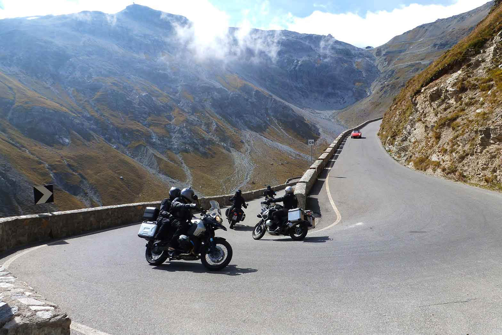
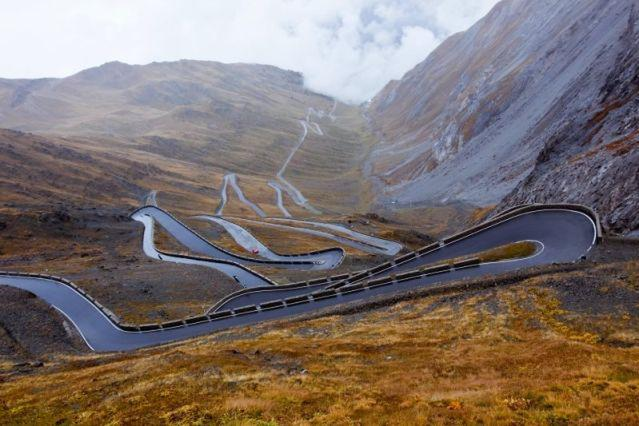
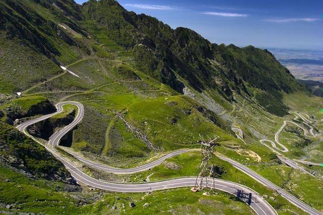
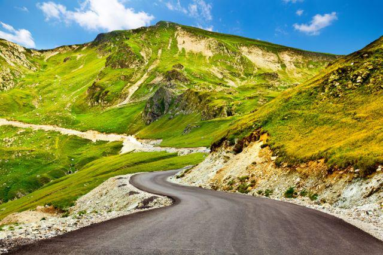
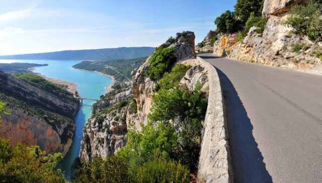
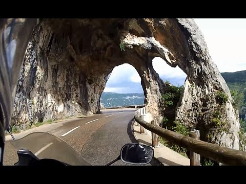
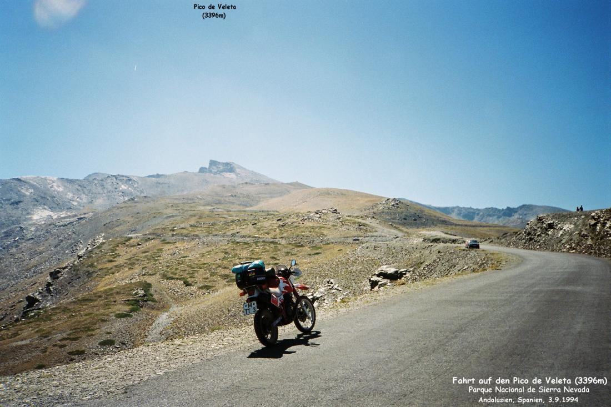
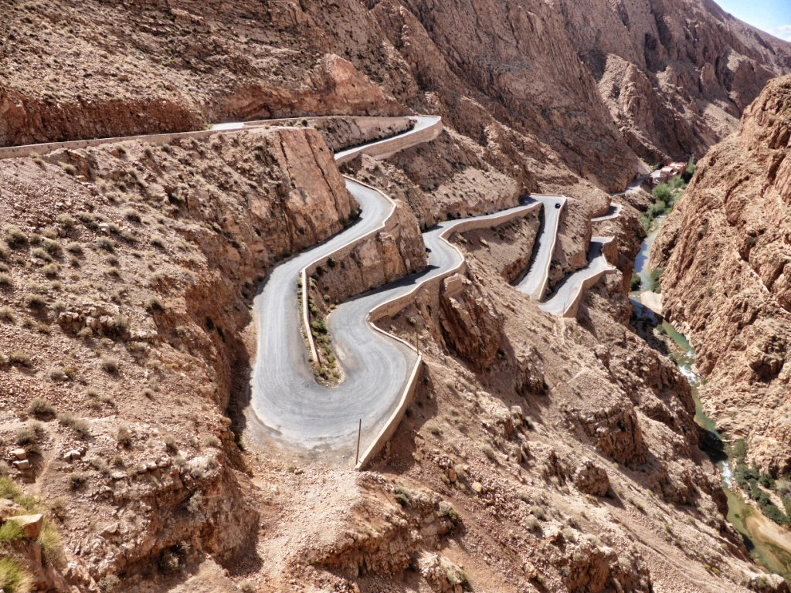

Trasy motocyklowe w Europie
Są takie trasy w Europie, których już sam widok pobudza wyobraźnię. W głowie zaczynamy sobie układać scenariusze tego, jak mógłby wyglądać przejazd przez nie. Często marzenia te są poddawane szybkiej realizacji. I wtedy pojawiają się pytania: gdzie konkretnie pojechać, by się nie zawieść? Oto najpopularniejsze trasy wśród motocyklistów.
Alpy
Każdy motocyklista powinien odwiedzić ten rejon choć raz w życiu. Bajeczne krajobrazy i wymarzone zakręty. Podczas jednej wyprawy warto zaliczyć kilka państw, np. Niemcy, Francję, Austrię, Szwajcarię i Włochy. Na pewno ogromne wrażenie zrobią na motocyklistkach nie tylko drogi, ale i wiecznie białe wierzchołki gór, szczyt Mont Blanc z bliska i zapierające dech w piersiach Dolomity czy najwyższy szczyt Austrii - Grossglockner. Pięknych miejsc do zobaczenia w Alpach jest wiele. Trasy są znakomite. Swoją wyprawę można zaplanować na ogromną liczbę sposobów.
W przypadku tej trasy trzeba mieć również trochę… szczęścia — niejeden motocyklista zostaje odesłany spod bramek, zwłaszcza w czerwcu, kiedy występują najbardziej intensywne opady śniegu.
Śladami Jeremiego Clarksona w Alpach Wschodnich
Kolejną, bardzo często wskazywaną jest przełęcz Stelvio (Passo del Stelvio) - najwyższa przejezdna przełęcz we włoskich Alpach Wschodnich.Droga wiedzie na wysokość 2757 m n.p.m., a chyba największą atrakcją są bardzo ciasne zakręty. Jednak to, co odróżnia tę drogę od trasy wiodącej na Grossglockner to zdecydowanie mniejsza ilość widoków. Ale czego nie robi się dla ciasnych winkli? Jeremy Clarkson nazwał tą trasę, jako najlepszą trasę na wyprawę samochodem, ale chyba nigdy nie był tam jeszcze jednośladem…
 Trasa Transfogarska w Rumunii
Słynna droga położona w paśmie rumuńskich Karpat, między ich dwoma najwyższymi szczytami - Moldoveanu i Negoiu. Motocykliści docenią jej część od strony północnej - tę pełną zakrętów. Przy trasie od strony południowej znajdują się z kolei liczne atrakcje - między innymi zapora na rzece Ardżesz o wysokości 160 metrów tworząca jezioro Vidraru oraz zamek Poienari należący do Włada Palownika (pierwowzoru Drakuli). Przemierzając Trasę Transfogaraską można spotkać wiele atrakcji turystycznych, wśród których można wyróżnić choćby piękny Zamek Poenari, zaporę na rzecze Ardżesz, a także tunel długości jednego kilometra. Dla osób łaknących podziwiania krajobrazów przygotowane zostały specjalne zatoczki, gdzie można zatrzymać się i chłonąć wszystkie piękna okolicy. Ze względu na zakręty na drodze obowiązuje ograniczenie prędkości do 40 km/h. Najdłuższy tunel Rumunii w najwyższym punkcie drogi jest zamknięty od października (lub listopada) do kwietnia (lub maja) z powodu śniegu i wiatrów.
 Połaczenie serpentyn górskich i lazurowego morza w jednym
Odwiedzając Francję nie można pominąć trasy biegnącej wokół Kanionu Verdon, położonego w południowo-wschodniej części kraju. Jest nią Droga Wierzchołków, dla Francuzów znana pod nazwą Route des Crêtes. Mierzy ona jedynie 23 km, a swój początek i koniec ma w miejscowości La Palud-sur-Verdon. Odcinek jest bardzo wąski i tym samym niebezpieczny, ale gwarantuje jednocześnie zobaczenie niecodziennych krajobrazów.
 Najwyżej położona droga w Europie
Najwyżej położona asfaltowa drogi w Europie ma numer A-395 i wiedzie z andaluzyjskiej Granady na szczyt El Pico del Veleta (3396 m) w górach Sierra Nevada. Droga wspina się z upalnej Granady do ośnieżonego szczytu, z czasem się zwężając i nawierzchnia jest coraz gorsza ale można dojechać na wysokość 3300 m n.p.m. Niestety kończy się ślepo i trzeba zawrócić. Ciekawostką jest, że w 40-stopniowym upale z Granady widać ośnieżone szczyty Sierra Nevada co naprowadziło już tysiąc lat temu Maurów na wynalazek lodów, sorbetów owocowych. Trasę należy rozpocząć od zwiedzenia bajkowego pałacu z tysiąca i jednej nocy Alhambra w Granadzie.
  Wróc